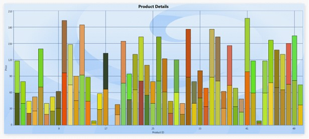

This enables the users to customize the Fast chat types like FastScatter, FastColumn, FastStackingColumn, and FastHiLoOpenClose. Using this feature, users can customize the Stroke, Stroke thickness, and interior of each chart segment of the series.
Adding Customization Support
Add customization support for FastChart types, by using the following code.
|
[Xaml]
<syncfusion:ChartSeries Name="series1" Type="FastStackingColumn" FastSegmentProperties="{Binding Converter={StaticResource interiorConverter} }" Stroke="Black" DataSource="{Binding}"/> |
|
[C#]
FastSegmnetPropertiesCollection list = new FastSegmnetPropertiesCollection(); FastSegmnetProperties segmentProperty = new FastSegmnetProperties { Stroke=Brushes.Black, StrokeThickness=1, Interior = brush }; list.Add(segmentProperty); series1.FastSegmentProperties= list; |

Figure 110: Customization support for FastChart types